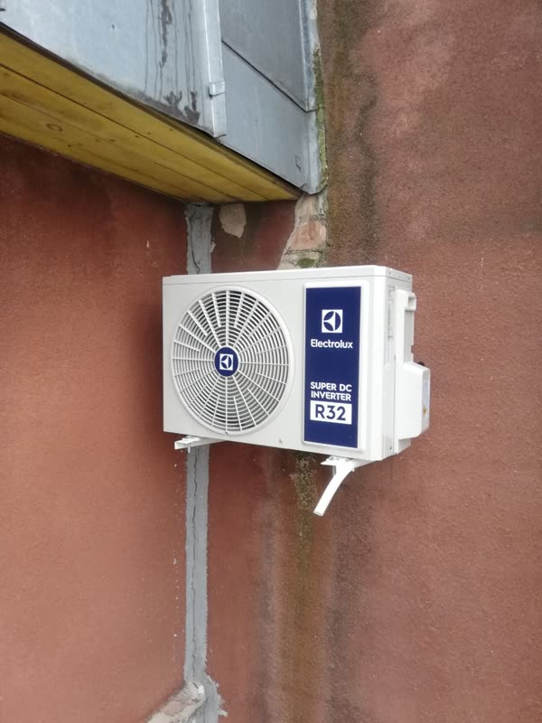

Короткий ответ: Инверторный кондиционер работает дольше обычного: летом охлаждает, зимой греет, и компрессор у него почти не выключается. Поэтому пыль и грязь копятся в нём быстрее, и одного обслуживания в год мало. Мы советуем два: весной перед жарой и осенью перед холодами.
Чем инвертор отличается от обычного кондиционера
Обычный кондиционер включается на полную мощность, охлаждает комнату и выключается. Инверторный работает по-другому: он плавно снижает обороты компрессора и держит температуру часами без остановки. Это экономит электричество и бережёт компрессор, но через внутренний блок всё это время идёт воздух, а вместе с ним пыль, шерсть и влага.
К тому же инвертор обычно греет зимой, то есть работает почти круглый год. Обычный кондиционер многие включают только в жару.
Почему одного обслуживания в год мало
- Грязь копится в два раза быстрее. Кондиционер работает и летом, и зимой. За зиму на обогреве фильтры и теплообменник забиваются так же, как за лето.
- Инвертор скрывает проблемы. Когда теплообменник грязный или фреона стало меньше, инверторный кондиционер просто поднимает обороты и продолжает охлаждать. Вы этого не замечаете, а компрессор работает на износ и тратит больше электричества.
- Плата управления боится перегрева. У инвертора в наружном блоке стоит электронная плата, её охлаждает тот же поток воздуха. Если наружный блок забит пухом и пылью, плата перегревается, кондиционер выдаёт ошибки и уходит в защиту. Ремонт платы стоит намного дороже обслуживания.
- Дренаж. Летом через дренажную трубку уходит вода. Если она забилась грязью, вода начинает капать из внутреннего блока прямо на стену и пол.

Когда вызывать мастера
- Весной (март–май), до жары. Мастер чистит кондиционер после зимы на обогреве и проверяет, что он готов к лету. Весной нет очередей, и мы приедем быстро.
- Осенью (сентябрь–октябрь), перед холодами. Мастер убирает летнюю грязь и проверяет кондиционер на обогрев.
Если кондиционер стоит в спальне, где включается только в сильную жару, и зимой вы им не греетесь, обычно хватает одного обслуживания в год, весной.
Что входит в обслуживание и сколько стоит
| «Базовый»: очистка внутреннего блока, обработка антисептиком, чистка фильтров, проверка и обжим контактов | 100 BYN для организаций 150 BYN |
| «Полный»: всё из «Базового», плюс очистка наружного блока, проверка дренажа и температурных режимов, дозаправка фреоном до 100 г | 150 BYN для организаций 200 BYN |
Многим клиентам с инвертором мы советуем так: весной «Полный», чтобы почистить наружный блок перед жарой, а осенью «Базовый».

Записаться: обслуживание кондиционеров в Могилёве, в Минске.
Что можно делать самому между визитами мастера
- Раз в 2–4 недели снимайте и промывайте сетчатые фильтры тёплой водой. Сушите их перед установкой.
- После охлаждения включайте режим «вентиляция» на 10–15 минут, чтобы внутри высохла влага и не появился запах.
- Следите, чтобы наружный блок не закрывали ветки, пух и снег.
Теплообменник, наружный блок и дренаж самому лучше не трогать: их чистят специальным оборудованием, а неправильная мойка может повредить плату.
Если кондиционеру больше 10 лет
Старые кондиционеры часто не инверторные, работают на устаревшем фреоне R22 и тратят много электричества. Если ремонт стоит дорого, иногда выгоднее поставить новый. Например, KingHome Prestige Inverter 12: инвертор, который мы сами ставим и обслуживаем.
Вопросы и ответы
Можно ли чистить инверторный кондиционер реже, если он почти не работает?
Да. Если он работал меньше месяца за сезон, одного обслуживания в год хватит. Но раз в 2–4 недели всё равно промывайте фильтры, когда он включён.
Как понять, что кондиционеру пора на обслуживание?
Он хуже охлаждает или греет, появился запах, из внутреннего блока капает вода, или он стал громче работать.
Сколько длится обслуживание?
Обычно 1–1,5 часа на один кондиционер.